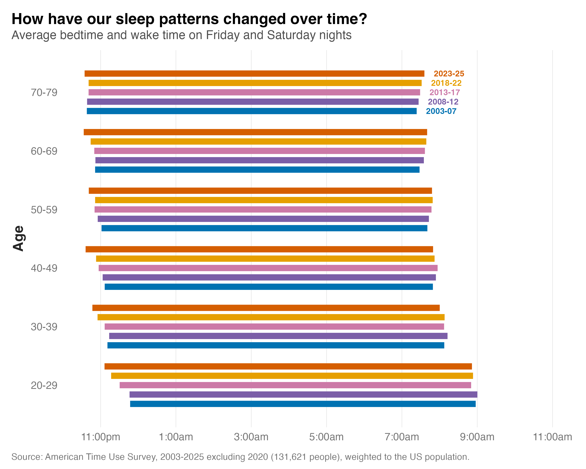

I've been really enjoying exploring data from the American Time Use Survey. In a couple of recent posts, I shared data suggesting that people are spending less time with friends, and that more TV and more sleep may be filling that gap. The increase in TV time didn't surprise me much. But the rise in sleep did, because it doesn't necessarily fit the narrative that people are working later into the evening or staying up late doomscrolling.
So I wanted to look at sleep patterns more directly. The figure below uses weekend diaries from 131,621 Americans aged 20 to 79, collected between 2003 and 2025. Each bar runs from the average bedtime on Friday and Saturday nights to the average wake time the next morning. The bars are grouped by age and time period.

Here's what I found:
1) People are going to bed earlier on weekends. The shift is largest for people in their 20s, whose average bedtime has moved from about 11:45pm in 2003-07 to about 11:05pm in 2023-25, around 40 minutes earlier. For people in their 30s to 60s, bedtime has moved about 20 to 30 minutes earlier. People in their 70s have barely changed.
2) Wake times haven't really changed. In every age group, the average wake time has shifted by no more than about 12 minutes since 2003-07.
3) The result is that people are getting more sleep, mostly because they're going to bed earlier. And this trend started prior to COVID. By 2013-17, people in their 20s were already going to bed about 17 minutes earlier on weekends than in 2003-07, and people in their 40s and 50s were already getting about 17 minutes more sleep.
I also looked at the trend on weeknights, because I was wondering whether earlier bedtimes on weekends may be compensating for later bedtimes during the week. But weeknights show the same trend towards earlier bedtimes, with very little change in wake times over the years.
So Americans are going to bed earlier. And this change, particularly among younger people, lines up with the evening hours where time with friends has fallen most.
Thanks to Meg Holding, Anna Black, and Andrew Holter for the conversation that sparked the idea for this post.